When a user says "the network is slow," your first instinct might be to search for errors. But the Time column often tells the story faster. What types of delay show up as large gaps in the Time column, and how do you distinguish high path latency from a slow server using only timestamps?
Use Time to Identify Network Problems
When troubleshooting slow network communications, it is important to focus on the Time column. Slow network performance can be due to high latency, access errors, excessive number of packets required to obtain data or a number of other causes.
When poor performance is due to delays in the communications, look for large gaps in time between a request and acknowledgement, an acknowledgement and a response, etc.
Wireshark does not generate timestamps itself — they come from a chain of components. What is that chain, and why does it mean two Wireshark systems may show different timestamps for the same packet? What is the resolution limitation of the standard pcap format?
Understand How Wireshark Measures Packet Time
During the capture process, Wireshark gets the timestamps from the libpcap/WinPcap library. This library gets the timestamp from the operating system kernel. When you save a trace file, the packet timestamps are saved with that file in a file header so packet arrival time can be displayed when the file is opened.
The pcap file format consists of a record header for each packet. These record headers contain a 4-byte value that defines the timestamp of that packet in seconds since January 1, 1970 00:00:00 Coordinated Universal Time (UTC). This field is followed by another 4-byte value defining the microseconds since that point in time. The time zone and current time setting of the capturing host is used in defining the packet timestamp.
Note that packets captured using the pcap file formats cannot define nanosecond timestamp values. These features are included in pcap-ng which is documented at wiki.wireshark.org/Development/PcapNg.
For more details on the pcap file format, refer to wiki.wireshark.org/Development/LibpcapFileFormat.
Wireshark offers eight time display formats. The default is not absolute clock time. Why is "Seconds since Beginning of Capture" the default, and when would "Seconds since Previous Displayed Packet" be more useful? What is the key difference between "Previous Captured Packet" and "Previous Displayed Packet" when a display filter is active?
Choose the Ideal Time Display Format
Wireshark offers eight time settings. Each time setting offers a different view of the timestamp value associated with each packet captured. Figure 111 shows the options available for the Time column setting.
Select View | Time Display Format to define the Time column setting. If you prefer to see more than one Time column at a time, add a column to the Packet List pane as explained in Create Additional Time Columns.
It is recommended that you synchronize your system time using Network Time Protocol (NTP) to ensure timestamp accuracy.
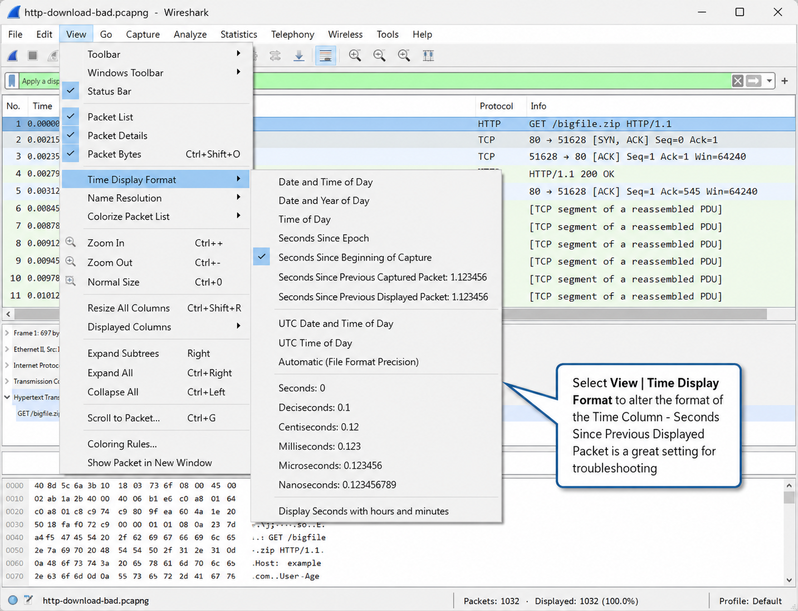
Date and Time of Day / Time of Day Settings
The Date and Time of Day and Time of Day options display the local time. If your local host time is off when you capture packets, the incorrect information will be saved with your trace file.
Seconds since Epoch
Epoch time may rarely be used, but it is interesting. An epoch is a selected instance in time. Wireshark's Seconds since Epoch time is measured since January 1, 1970, which is also referred to as UNIX time.
Seconds since Beginning of Capture
Seconds since Beginning of Capture is the default time setting for Wireshark. The first packet in the Time column is set to a time value of 0. All other packet timestamps are measured in comparison to that first packet. In Figure 112, using this time setting we can see that packet 9 (the Window Update packet) occurs 0.335607 seconds after the connection setup began in packet 1.
This is an appropriate setting if your trace includes a single transaction, such as the process of loading a website.
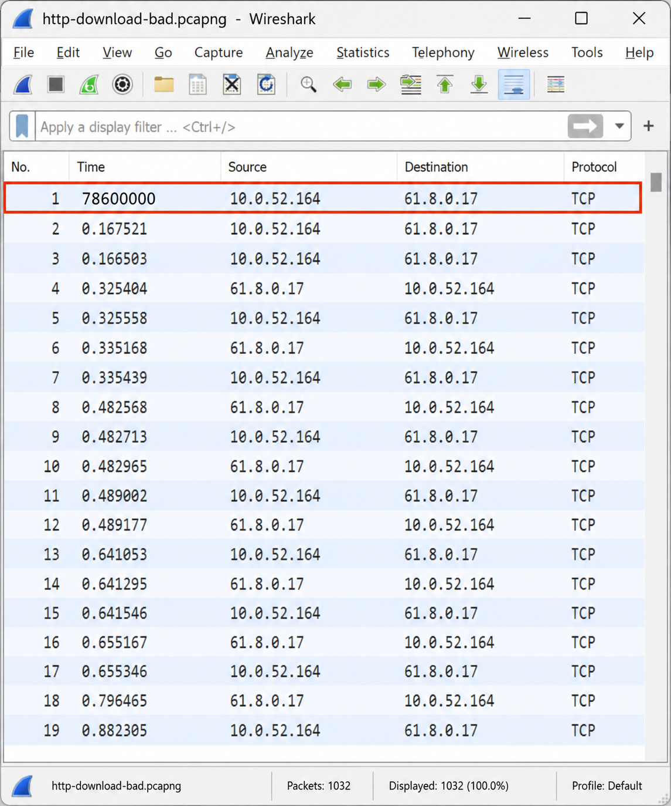
Seconds since Previous Captured Packet
This setting is often called the delta time setting and measures the time from the end of one packet to the end of the next packet for all captured packets. If a display filter is set and a packet is not displayed, its timestamp is still calculated and shown on packets that are displayed.
Seconds since Previous Displayed Packet
Seconds since Previous Displayed Packet only counts the delta time value from the end of one displayed packet to the next displayed packet.
If you are filtering on a conversation in the trace file, apply this Time column setting to examine the delta time between packets in the conversation only.
Figure 113 compares the Time column values for Seconds since Previous Captured Packet and Seconds since Previous Displayed Packet. Packets 3, 5 and 6 have been filtered out. For simplicity sake, we only used millisecond-level time stamping.
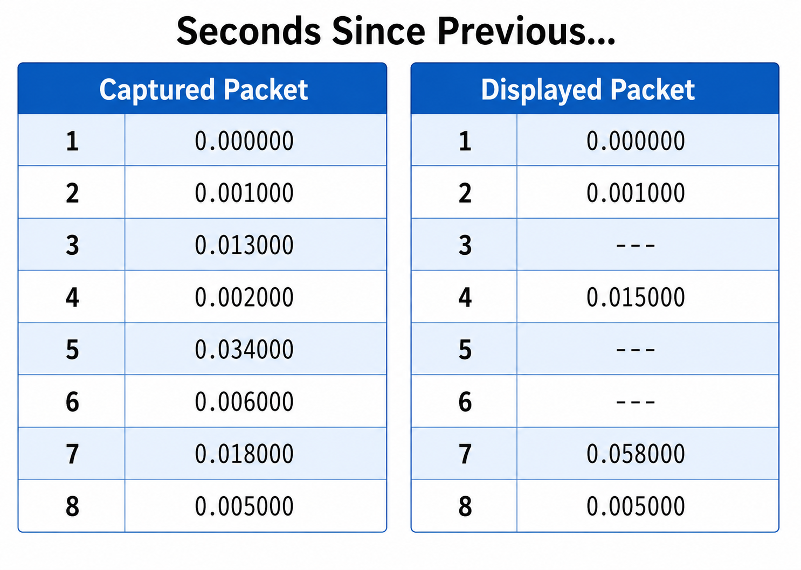
UTC Date and Time of Day / UTC Time of Day Settings
The UTC Date and Time of Day and UTC Time of Day options display the trace file time based on UTC time, not the local time.
Deal with Timestamp Accuracy and Resolution Issues
As discussed earlier, Wireshark does not create the packet timestamps. Timestamp accuracy may vary from one Wireshark system to another. The Wireshark documentation makes special reference to USB adapters and the "bad timestamp accuracy" they offer. Those timestamps are passed to the operating system kernel which in turn is passed to the libpcap/WinPcap library.
Wireshark's libpcap/WinPcap capture libraries support microsecond resolution which is typically adequate. A specialized adapter/driver is required to support capture with nanosecond time resolution. If you open a trace file captured with another network analyzer tool, you may find that the resolution is set to milliseconds and contains values after the decimal such as .342000, .542000, and .893000. There is nothing you can do to enhance the timestamp on these existing trace files.
Figure 114 shows the interpretation of Wireshark's timestamp value down to the nanosecond.
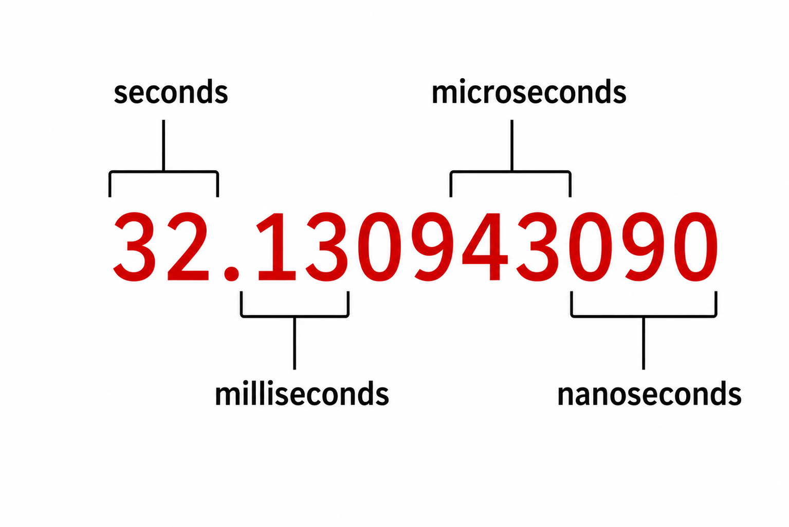
Send Trace Files Across Time Zones
If you regularly travel, enable Network Time Protocol (NTP) to ensure your system has the proper time. You will still need to adjust the time zone manually.
The Date and Time of Day and Time of Day values may not be an issue if you are only focused on the time between packets (Seconds since Previous Displayed Packet) or the comparative time between non-contiguous packets in a trace file. For example, if you are analyzing the response time to HTTP GET requests, you can simply use the Seconds since Previous Displayed Packet setting.
If, however, you are interested in the exact date/time that a packet was captured and you send this trace file off to someone in another time zone, the trace file will have a different date/time value for the recipient. Remember — the pcap and pcap-ng file formats contain a record header for each packet that defines the difference between the local time and January 1, 1970 00:00:00 UTC. This value will be based on the time setting of the system that captured the trace file.
A trace file captured on a host in London, England will contain the GMT/UTC differential value of the capturing Wireshark system — GMT/UTC-0. When that user in London opens the trace file, the timestamp is set at 10:04am.
When the same trace file is emailed to someone on the west coast of the United States (Pacific Standard Time), the file still contains the GMT/UTC-0 value even though the user in the US is on GMT/UTC-8. When that user opens the trace file, the timestamp is seen as 2:04am as that system's GMT/UTC offset is quite different.
If you need to know the actual time that a packet was captured, you need to allow for the different time zone values.
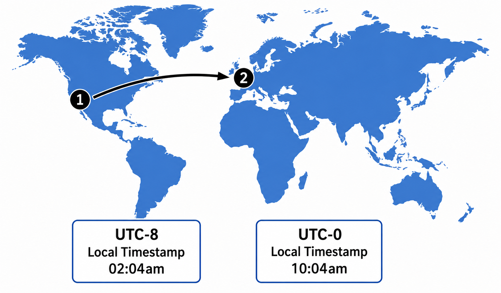
Create Additional Time Columns
If you want to view two or more Time columns in your Packet List pane, use Edit | Preferences to add a predefined Time column value or expand the Frame header, right click on a time field and select Apply As Column. Alternately, select Edit | Preferences | Columns | Add and select one of the following time-related field types:
- Absolute date and time — based on the date and time of the capturing host (same as Date and Time of Day setting)
- Absolute time — based on the time of the capturing host (same as Time of Day setting)
- Delta time (conversation) — time from the end of one packet to the end of the next packet in a conversation
- Delta time displayed — time from the end of one packet to the end of the next packet of displayed packets only (same as Seconds Since Previous Displayed Packet)
- Relative time — time from the first packet in the trace file (same as Seconds Since Beginning of Capture setting)
- Relative time (conversation) — time from the first packet in the trace file for the conversation only
- Time (format as specified) — displays the value set using View | Time Display Format
Using two Time columns you can easily compare the arrival packet time (Time since Beginning of Capture) to the delta time (Time since Previous Displayed Packet).
You have a trace file showing a file download that is taking far too long. Describe a step-by-step approach using the Time column, sorting, and time references to isolate the worst delays and measure the total duration of a specific problem window within the trace.
Identify Delays with Time Values
To isolate slow performance caused by high latency, set the Time column value to Seconds since Previous Displayed Packet using View | Time Display Format | Seconds since Previous Displayed Packet. Wireshark retains this time setting in the preferences file.
You can sort the Time column to identify packets that have a large delay between them.
In Figure 116, the Time column is set to Seconds since Beginning of Capture. We have added another column for the delta time setting by expanding the Frame section of a packet, right clicking on the Time delta from previous displayed frame line and selecting Apply As Column. We have clicked twice on the new delta Time column heading to sort from highest to lowest in delta times. At the top of the sorted packet list we see large delays between displayed packets.
The trace file contains a single file download process. In the midst of the file download process, delta times jumped to over 16 seconds, 8 seconds, 4 seconds, 2 seconds and 1 second. It appears the performance issue occurs around the packet range 367-375.

Sorting the trace file by the number column enables us to look sequentially at the traffic surrounding large gaps in time to see what lead up to the problem.
Measure Packet Arrival Times with a Time Reference
Set a time reference and use Seconds since Beginning of Capture when you need to determine the time from the end of one packet to the end of another packet further down in the trace file. For example, if you want to find the time between a DNS query for www.aol.com and the final packet sent when the page is loaded, set the DNS query with a time reference and scroll down to the final packet. The time shown on the final packet sent indicates the entire load time including the DNS lookup process.
To set the time reference, right click on a packet and choose Set Time Reference (toggle). The time reference packet is temporarily given a timestamp of 00:00:00 in the trace file (denoted by REF in the Time column). The arrival time of all future packets is based on the arrival of the previous time reference packet. You can set more than one time reference packet in a trace file.
In Figure 117 we have set the time reference on packet 363 of http-download-bad.pcapng. This is the last packet containing data before a zero window condition occurred. Scrolling down to packet 379, when data transfer resumes, we can see the entire delay time was 32.661522 seconds. For more information on Zero Window conditions, refer to Chapter 20: Analyze Transmission Control Protocol (TCP) Traffic.
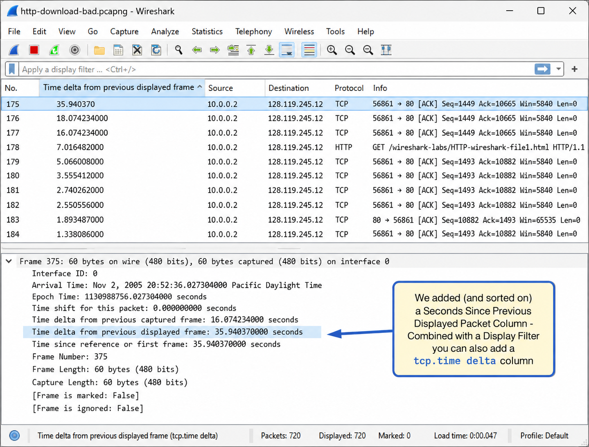
The TCP three-way handshake plus first HTTP exchange (packets 1-6) is a powerful diagnostic snapshot. How do you use just those six packets to measure three distinct types of latency when Wireshark is placed close to the client? And what is the important caveat about treating the SYN/SYN-ACK gap as a definitive measure of path latency?
Identify Client, Server and Path Delays
Figure 118 shows a TCP connection set up (three-way handshake in packets 1-3), an HTTP GET request (packet 4), a TCP ACK (packet 5) and a server responding with HTTP data (packet 6). You can use the packets in an HTTP connection setup to identify wire latency and processor latency. In this example, we use http-download-bad.pcapng again.
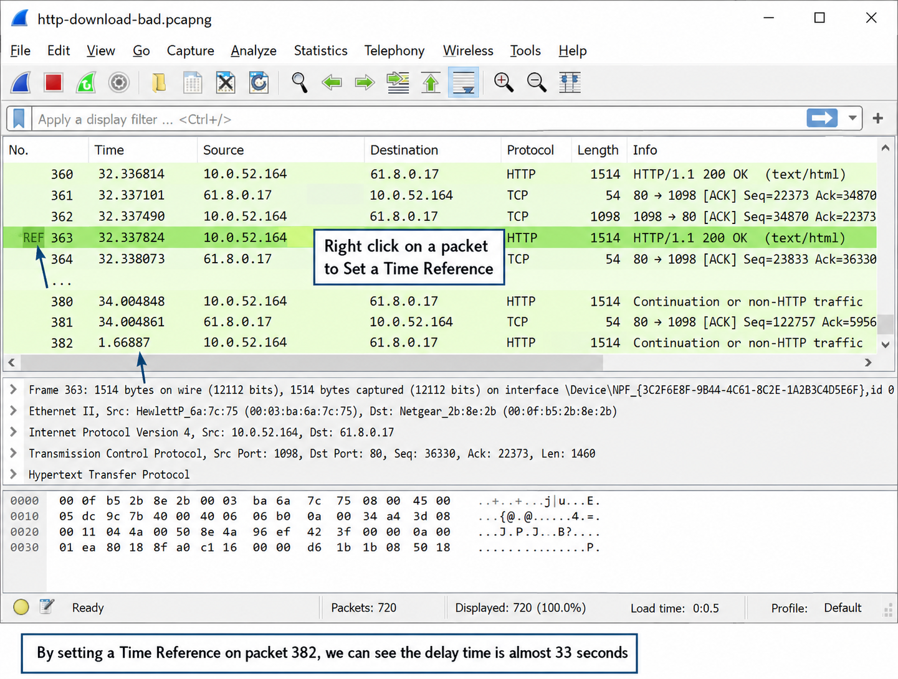
Handshakes Provide a Nice Snapshot of Latency
You can look at the SYN and SYN/ACK of a TCP connection establishment process to determine round trip latency time at that moment. Keep in mind that this measurement only provides a snapshot of round trip latency between the hosts. Just a few seconds later the round trip latency may be entirely different. Refer to the Tip in the section entitled Graph Round Trip Time to learn how to build a graph of the average latency time in a trace file.
We can use this short section of the communications to identify three types of latency between the client and server: end-to-end path delays, slow server responses and slow clients.
Calculate End-to-End Path Delays
In Figure 118, Wireshark has been placed close to the client. The time between the initial TCP SYN (packet 1) and SYN/ACK (packet 2) packets indicate the round trip path latency time from the capture point. High latency times along a path should be evident by looking at the first two packets of the TCP handshake.
In this example, the Time column has been set at Seconds since Previous Displayed Packet. The latency time between the SYN and SYN/ACK packet is over 167 milliseconds (.167521 seconds). We next examine the time between the GET request (4) and the ACK in response (packet 5). The round trip latency time is over 155 milliseconds (.155654 seconds).
High latency along a path can be caused by interconnecting devices that make forwarding decisions on the packets, slow links along a path, the distance between end devices or other factors.
Locate Slow Server Responses
Examine the time between the server's ACK (packet 5) and the actual data packet (6) to identify potential server processor latency problems.
For example, in http-slowboat.pcapng (shown in Figure 119) we can see approximately 37ms response (ACK in packet 9) to a GET request from the client. Another four seconds lapse before the data transfer begins (packet 10).
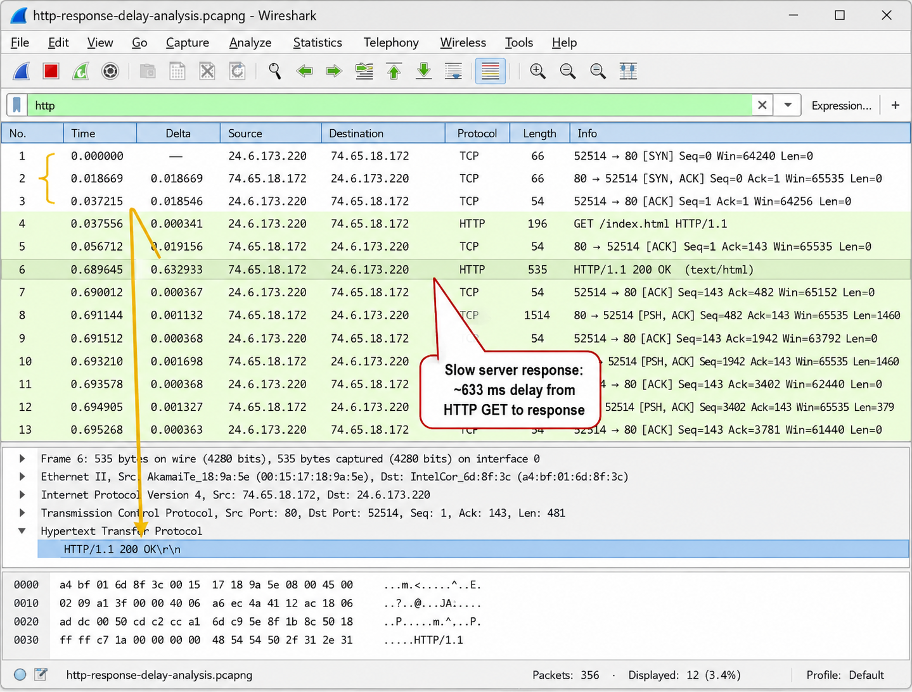
Servers may be slow responding when they are overwhelmed with other requests or processes or are underpowered (in processor capabilities or memory). Again, remember that this is simply a snapshot. Additional communications should be examined to verify that high server processor latency times are the problem.
Spot Overloaded Clients
Client latency issues are evident when a large delay occurs before a client makes a request for a service. For example, if there was a large delay between the ACK (packet 3) and GET Request (packet 4), the client is injecting latency into the communications.
Clients may be slow making the next request in a communication if the client is overloaded. This problem may be due to problems such as insufficient processing power, not enough memory available, or slow disk read/write operations, etc.
The Statistics | Summary window always shows three columns simultaneously. How would you use marked packets and display filters together to compare three specific traffic types in one window — and what filter would you apply to identify how often large time gaps occur across the trace?
View a Summary of Traffic Rates, Packet Sizes and Overall Bytes Transferred
View Statistics | Summary for basic information about the saved or unsaved trace file. Summary statistics includes file format information, file length, time elapsed, number of packets, average packets per second, average packet size, total bytes, average bytes per second and average megabits per second. The summary information is particularly valuable when comparing proper network performance with problematic network performance.
Compare Up to Three Traffic Types in a Single Summary Window
You can compare three traffic types in one Summary window:
- All captured packets in the trace file
- All displayed packets in the trace file
- All marked packets in the trace file
To compare three traffic types, as shown in Figure 120, follow these simple steps:
- Open http-espn2012.pcapng. Enter
dnsas your display filter. Select Edit | Mark All Displayed Packets. All the DNS traffic should be displayed in a black background and white foreground. - Apply a new display filter for
tcp.analysis.flags && !tcp.analysis.window_update. Do not clear this display filter. - Select Statistics | Summary to view the Captured, Displayed and Marked columns at the bottom of the Summary window.
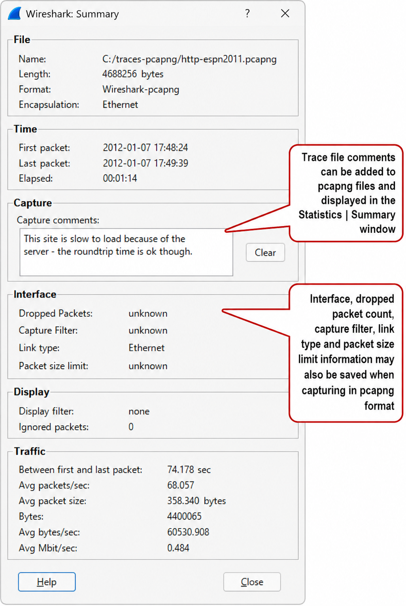
Compare Summary Information for Two or More Trace Files
If you have created a baseline of network communications when performance was acceptable, you can use the summary window to compare basic statistics of your baseline traffic against the statistics of a current capture taken when performance was not acceptable. For more information on the baselines you should create, refer to Chapter 28: Baseline "Normal" Traffic Patterns.
Figure 121 shows two summaries side-by-side. In this case we launched two instances of Wireshark, loaded a separate trace file in each instance, and opened the summary window for each of the trace files.
Comparing the two summaries side-by-side, the trace file showing the slower download process has a much lower packet per second rate and average megabits per second rate than the trace file showing the faster download process.
To enhance these Summary views further, Wireshark allows you to filter on a number of values. In Figure 122 both trace files are filtered on tcp.time_delta > .500 which displays all delay spots in the trace files.
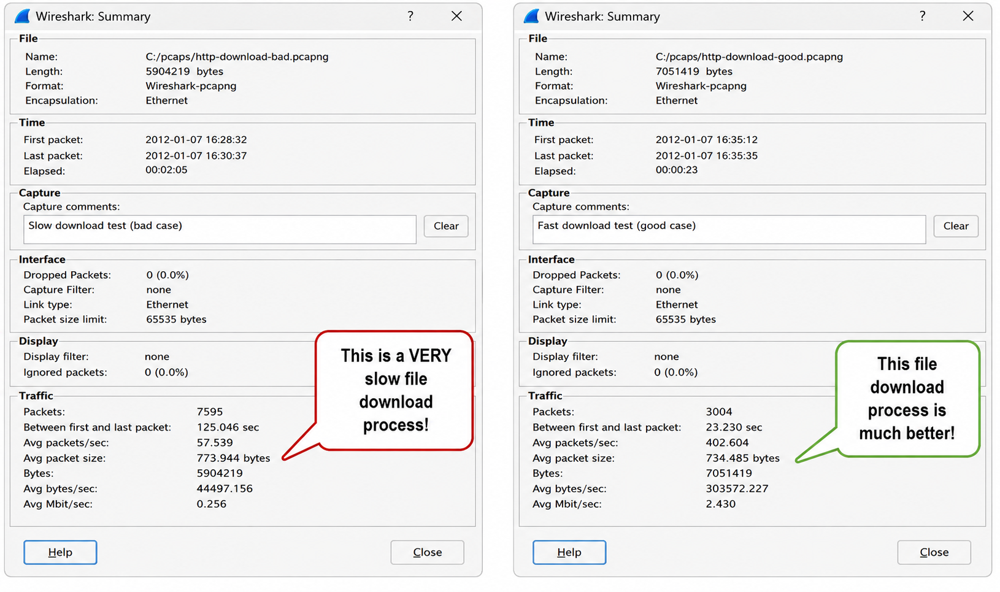
It is also possible to apply a filter for tcp.analysis.flags && !tcp.analysis.window_update and then Mark All Displayed Packets. The marked column in the Summary window would show the number of TCP analysis events in each trace file. For more information on display filtering, refer to Chapter 9: Create and Apply Display Filters.
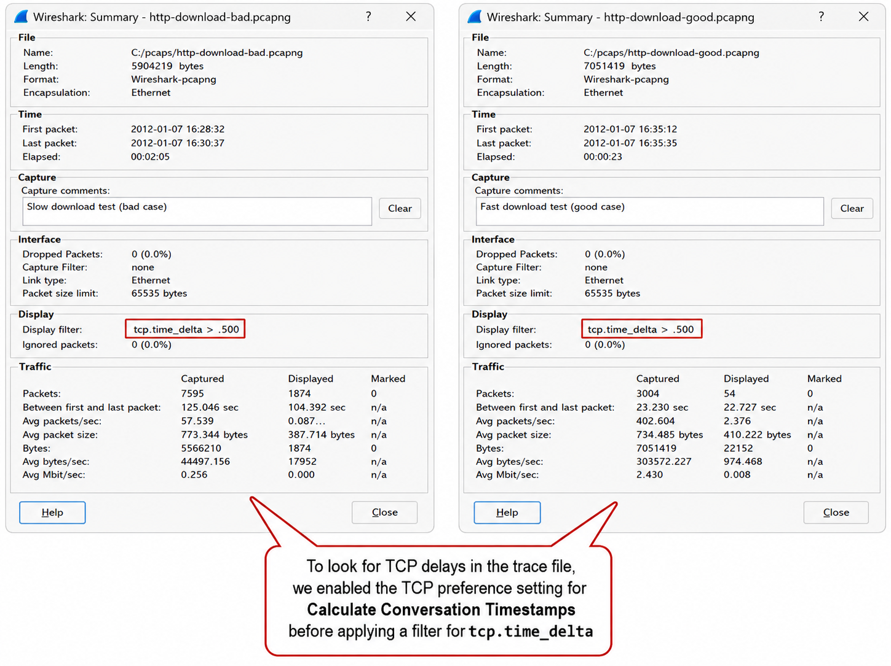
tcp.time_delta > .500 in both to count how many half-second gaps exist in each trace file.tcp.time_delta > .500 surfaces all TCP packets with gaps exceeding half a second.Case Studies
The customer complained that sending print jobs via 100 Mbps Ethernet to the print server was extremely slow.
I obtained network traces of the communication between their Windows Line Printer (LPR) client and our Line Printer Daemon (LPD) server and had my own baseline traces for comparison. It's usually very helpful to be able to compare a baseline trace to the "bad" or "abnormal" trace. I've found many times that we can identify at least where the differences between them start to occur and we can find the problem from analyzing the differences.
The first thing I did was look through the trace to see if there were any problems that were immediately obvious, and didn't see anything wrong in the LPR protocol (RFC 1179) communications. I normally have Wireshark's Time column configured to show the interpacket timing (Time since Previously Displayed Packet) — this is an example of a case when this was extremely helpful.
When I looked through the trace and paid attention to the interpacket timing, I noticed there were frequent and repeated ~200 ms (millisecond) gaps between packets in the LPR communication. Furthermore, there was a fairly clear pattern. The frequency and volume of these delays were making the data transfers extremely slow, because there were hundreds or thousands of these delays in a typical data transfer. The data transfer speed was slower than a telephone dialup connection at the time (approximately 56 Kbps).
One very easy way to identify this specific problem in the future was to use the display filter of Wireshark to view only the LPR traffic and then sort the trace by interpacket times with the largest times on top.
There were extremely frequent incidents of the ~200 ms delay times listed. Also, the Wireshark feature that is helpful to identify this type of problem is the IO Graphs feature. You can set the X Axis tick interval to 0.1 seconds and the Y Axis units to bytes/tick. In this situation, the IO Graph would show lots of bursts of traffic with delays between each burst set. I sometimes refer to this problem as the "hurry up and wait syndrome," because the data is transferred quickly with lots of time spent waiting for acknowledgements.
The customer believed that this problem was due to our specific device because they did not experience the problem with their other devices.
The root cause of the problem was in the implementation of the LPR client by Microsoft and how it interacted with the print server. I am unable to go into the details of how we worked around the problem for the products we manufactured, but you can see what the Microsoft Knowledgebase has to say and recommend regarding this type of problem at support.microsoft.com/kb/950326 and support.microsoft.com/kb/823764.
A workaround for this specific problem is to use other network printing protocols that are available such as SMB, Port 9100/raw, etc.
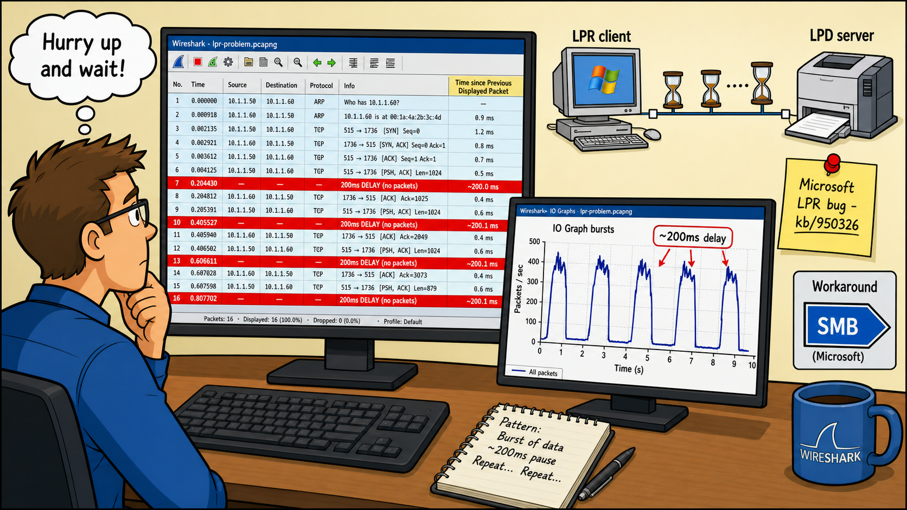
Performance problems can be caused by delays along a path, delays at the server or even delays at the client. You can change Wireshark's default Time column setting or add more Time column settings (such as tcp.time_delta) to help you measure the time between packets or from specific points (time references) in the trace file. Setting the Time column to Seconds since Previously Displayed Packet helps identify gaps between consecutive packets in a trace file.
Each trace file contains per-packet headers that include a main timestamp value based on the seconds since January 1, 1970 00:00:00. Wireshark references these headers when displaying packet timestamps in the Frame section of the Packet Details pane. When you open a trace file on hosts configured for different time zones, the trace file timestamp values displayed will be different.
You can set a time reference in a trace file by right clicking on a packet in the Packet List pane and selecting Set Time Reference (toggle). The Time column will then provide the time from the current packet to the time reference packet.
You can use the TCP handshake to provide a snapshot of the round trip latency time between hosts. This is only a snapshot, however, and round trip time can vary over time.
You can use the trace file summaries to compare basic information for trace files and even use a time filter to identify how often large gaps in time are seen in a trace file. Pcapng trace files can define time at the nanosecond level. You must have specialized hardware to capture at this granular time.